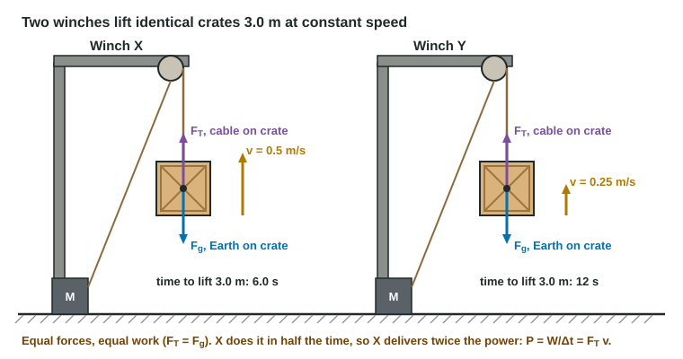

Power
Power is how fast energy is transferred: P = W/Δt in watts, or P = F_∥v at an instant.
Part 1 · Hook
Why this matters
Part 2 · Before you start
What this builds on
Part 3 · Prerequisite check
Quick check before you start
1. At constant speed, the work a cable does lifting a mass m through a height h is
- mgh
- ½mv²
- mh
- mg/h
Show the answer
The cable's force equals mg; times the distance h.
- Correct: mgh:
- ½mv²:
- mh:
- mg/h:
2. Total energy of a system changes only by
- energy transferred across its boundary
- friction inside it
- changes in its speed
- changes in its height
Show the answer
Conservation of energy: inside, energy changes form; it changes in amount only by transfer.
- Correct: energy transferred across its boundary:
- friction inside it:
- changes in its speed:
- changes in its height:
Part 4 · See it
See it first

Part 5 · Step by step
How it works, step by step
- A force does work W over a time interval Δtits average power is P = W/Δt, in watts (J/s)
- The same work is done in less timethe power is larger, in inverse proportion to the time
- A force F acts along an object moving at speed vits instantaneous power is P = Fv (F_∥v in general)
- A motor delivers constant powerthe force it can supply falls as the speed rises: F = P/v
Part 6 · Key ideas
Key ideas
- Power is the rate of energy transfer: P_avg = W/Δt = ΔE/Δt. Its unit is the watt, 1 W = 1 J/s.
- Same work in half the time is twice the power. Work tells how much; power tells how fast.
- Instantaneous power of a force is P = F_∥v, the force component along the velocity times the speed.
- A kilowatt-hour is energy, not power: 3.6 × 10⁶ J.
Part 7 · Misconception
A common mistake
The wrong idea: The person who does more work always has more power.
What actually happens: Power is work per unit time. A heavier student who climbs slowly can do more work with less power than a lighter one who runs.
Part 8 · Check yourself
Check yourself
Exam-style questions. Anything you miss goes into your review queue.
Diagram
Two winches
Each crate has a mass of 40.0 kg. Use g = 9.8 m/s².
1. How much work does winch X's cable do on its crate during the lift? Give the value and its unit.
Type a number and its unit.
Show the answer
At constant speed the cable's force equals mg = (40.0 kg)(9.8 m/s²) = 392 N, so W = (392 N)(3.00 m) = 1.18 × 10³ J.
- Answer: 1.18 × 103 J
2. What is winch X's average power output to its crate? Give the value and its unit.
Type a number and its unit.
Show the answer
P = W/Δt = 1176 J / 6.00 s = 196 W. A watt is a joule per second.
- Answer: 196 W
3. How do the two winches compare?
- Same work; X's power is twice Y's
- X does twice the work and has twice the power
- Same work and same power, because the crates are identical
- Same work; Y's power is twice X's, because Y works longer
Show the answer
W = mgh = 1176 J for both. P = W/Δt: 196 W for X and 98.0 W for Y.
- Correct: Same work; X's power is twice Y's: Right: the same force over the same distance, done in half the time.
- X does twice the work and has twice the power: The cable force (mg) and the distance (3.00 m) are the same, so the work is the same.
- Same work and same power, because the crates are identical: Power also depends on the time. X takes half as long.
- Same work; Y's power is twice X's, because Y works longer: Working longer for the same work means a smaller rate: lower power.
4. Use P = Fv to find winch Y's power output to its crate, in watts.
Type a number in W.
Show the answer
At constant speed F_T = mg = 392 N, so P = F_T v = (392 N)(0.250 m/s) = 98.0 W, matching W/Δt = 1176 J / 12.0 s.
- Answer: 98.0 W
5. A motor does a fixed amount of work in one third of the time it used to take. Its average power becomes
- one third as large
- 3 times as large
- 9 times as large
- unchanged, since the work is the same
Show the answer
P = W/Δt ∝ 1/Δt. One third of the time gives three times the power.
- one third as large: Less time for the same work means a higher rate, not a lower one.
- Correct: 3 times as large: Right: P = W/Δt, so dividing Δt by 3 multiplies P by 3.
- 9 times as large: Nothing is squared in P = W/Δt.
- unchanged, since the work is the same: The work is the same, but power is work per unit time.
Part 9 · Summary
Summary
Part 10 · Up next
What comes next
Part 11 · Connections